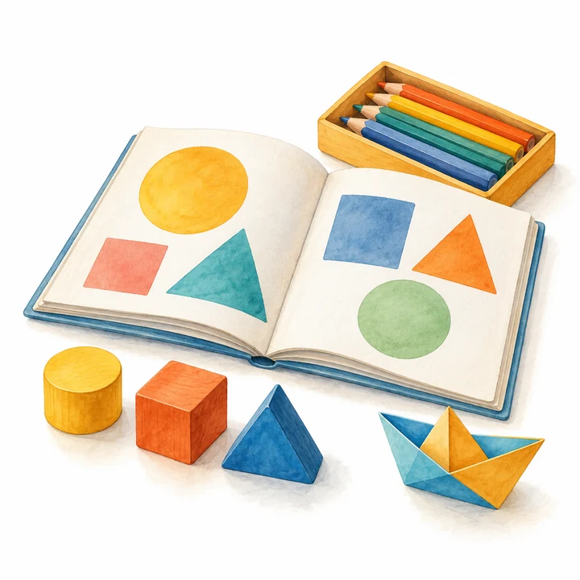

3–6 歲及 6–12 歲
兒童興趣班
課程分為幼兒及兒童組，包括藝術、語文、數學、舞蹈及領袖訓練。
可與幼稚園、小學及機構商議恆常課後興趣班、假期密集營或全校主題活動日。
按類別查看每項課程的內容。課程堂數、教材及現行收費，可透過 WhatsApp 查詢。
3–6 歲 幼兒興趣班
38 個課程創意藝術
4 個課程小手畫世界、色彩魔法師、故事繪本創作、紙藝小達人
領袖訓練
5 個課程小小領袖成長班、禮儀小天使、表達力訓練班、合作小勇士、小小解難王
遊戲才藝
5 個課程桌上遊戲樂園、小小魔術師、音樂律動班、趣味體能遊戲、故事劇場遊戲
黏土美術
5 個課程黏土小天地、黏土故事屋、色彩黏土樂園、黏土小飾品、卡通黏土工房
畫室美術
3 個課程水彩小畫家、創意拼貼畫、創意油粉彩
舞蹈
3 個課程音樂小精靈舞動班、小天鵝芭蕾夢、小小韓流偶像班
中文
3 個課程故事小天地、詩詞童謠班、拼音啟蒙
英語
4 個課程English Fun Time、Phonics Playgroup、Storytelling English、English Craft & Play
English Fun Time
運用全身反應法（TPR），透過英語歌唱、詞語遊戲、簡單對話、繪本閱讀及角色扮演接觸英語。
Phonics Playgroup
從字母音開始，透過字母歌、發音遊戲、拼讀、配對及朗讀活動，建立拼音基礎。
Storytelling English
以故事閱讀和角色表演為主，配合詞語配對、故事續寫及創意畫畫，練習聽、說、讀。
English Craft & Play
在主題手工、作品分享和遊戲中學習英語詞語及簡單句子，練習理解課堂指令。
數學
2 個課程數學遊戲班、數感啟蒙
6–12 歲 兒童興趣班
39 個課程創意藝術
5 個課程繪畫小達人工作室、漫畫小作家學院、數碼小畫家創作坊、立體雕塑家工坊、設計小師傅工作室
領袖訓練
3 個課程領袖小先鋒訓練營、辯論小高手學院、情緒小管家培訓班
遊戲才藝
2 個課程桌遊小達人、魔術師學院
黏土與立體創作
4 個課程黏土小達人、模型小師傅工房、四驅車小技師、我係陶飾品設計師
畫室美術
3 個課程水彩魔法師學院、拼貼大師工作室、油粉彩色彩探險隊
舞蹈班
3 個課程節拍達人訓練營、芭蕾小明星學院、K-POP閃亮舞台團
節拍達人訓練營
學習 Hip-hop、Popping 等街舞元素，練習律動、節拍和舞步組合，並參與 Battle 體驗。
芭蕾小明星學院
學習芭蕾基本功、術語和經典變奏，練習舞台表演，可商議考級及比賽準備。
K-POP閃亮舞台團
學習 K-POP 歌曲舞蹈，練習整齊度、隊形編排和舞台表情，可商議演出及拍攝安排。
中文班
5 個課程文字小偵探社、穿越古代文字旅、想像力爆炸工廠（中文創作）、超級演說家學院、墨寶小書仙
文字小偵探社
練習篇章精讀、閱讀策略、寫作和修辭，並進行專題寫作。
穿越古代文字旅
透過文言文故事、常用字詞、句式分析、朗讀吟誦及簡易古文創作，認識古文。
想像力爆炸工廠（中文創作）
透過觀察力練習、想像力遊戲及不同文體寫作，分享及互評作品，嘗試製作個人文集。
超級演說家學院
練習發音、語調、演說結構、情感表達和台風儀態，可商議比賽準備。
墨寶小書仙
學習硬筆書法和毛筆楷書，進行臨摹及創作，欣賞並裝裱展示作品。
英文班
4 個課程英語小巨星劇團、英語辯論高手營、英語故事創作坊、英語配音小達人
數學班
3 個課程數學小天才挑戰營、數學小偵探解謎社、想像力爆炸工廠（生活理財）
數學小天才挑戰營
練習競賽題型、速算、邏輯推理及圖形問題，並透過模擬比賽運用解題方法。
數學小偵探解謎社
從生活問題開始，學習資料搜集、數學建模、結果解釋和驗證，並發表專題報告。
想像力爆炸工廠（生活理財）
認識金錢、儲蓄計劃、消費決策及簡單投資概念，透過活動練習個人理財規劃。